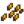
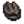
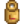
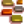

Chariot de voyage
| Chariot de voyage | |
 | |
 | |
| Heures d'ouverture : | 6:00H à 20:00H Vendredi et Dimanche 17:00H à 2:00H durant le marché nocturne |
| Fermé : | Lundi - Jeudi, Samedi |
| Adresse : | Forêt Sève-Cendreuse |
| Occupants : | |
Le Chariot de voyage est un magasin qui apparait au sud de la ferme, dans la Forêt Sève-Cendreuse, le vendredi et le dimanche. Il apparaît également chaque jour du marché nocturne (du 15 au 17 de l'hiver).
Le chariot est tiré par un cochon portant un fez et des lunettes. Si vous interagissez avec le cochon, il va vous faire "groink". Si vous maintenez le bouton droit de la souris, le cochon émet une mélodie. Pendant le marché nocturne, le cochon flotte derrière le chariot dans une chambre à air.
Le marchand vend une sélection d'objets aléatoires en quantités limitées (1 ou 5 de chaque). On trouve parfois des articles en vente en dehors de leurs saisons normales, ce qui peut être utile pour compléter les paquets.
Les prix des chariots de voyage peuvent varier d'une visite à l'autre, et il est possible qu'un même article soit répertorié plusieurs fois à des prix différents lors d'une même visite. Les prix sont généralement assez élevés, mais vous pouvez trouver un article vendu pour moins cher que son prix normal.
Le stock du marchand comprend 10 articles et un meuble. Il peut également y avoir un article du «stock spécial» supplémentaire à vendre.
Stock spécial
Notez que les objets grain de café et graine rare peuvent également être vendus en toute saison en tant que stock standard (1.26% chance d'apparition).
| Objet | Prix à l'unité | Saison | Notes | |
|---|---|---|---|---|
| Graine rare | 100% chance d'apparaitre 10% chance pour 5 piles; 90% chance pour 1 pile. | |||
| Épouvanrare (4 des 8) | 40% chance d'apparaitre. | |||
| Grain de café | Toutes | 25% chance d'apparaitre. | ||
| Recette de la bague de mariage | Toutes | Multijoueur seulement: 100% de chance d'apparaitre jusqu'à l'achat. Solo: n'apparait pas. | ||
Stock standard
Les articles non illustrés ne sont pas vendus dans le chariot de voyage. Les articles vendus dans le chariot de voyage sont toujours de qualité normale, jamais de qualité argent, or ou iridium.
Plats préparés
Récoltes & Cueillette
| Article | Prix |
|---|---|
|  Riz non moulu | |
Graines & Engrais
Poissons & Cueillette à la plage
| Article | Prix |
|---|---|
|  Coque | |
Produits artisanaux
| Article | Prix |
|---|---|
Produits animaliers
| Article | Prix |
|---|---|
|  Lait | |
Fabrication
| Article | Prix |
|---|---|
|  Chemin de cristal | |
Ressources
| Article | Prix |
|---|---|
Sirops
| Article | Prix |
|---|---|
Appât & Matériel de pêche
| Article | Prix |
|---|---|
Butin de monstre
| Article | Prix |
|---|---|
Meubles
Chaque Meubles listés ci-dessous ont 0.68% de chance d'apparaître dans le stock standard du chariot de voyage. Le prix pour chacun sera entre  250–2 500po.
250–2 500po.
Les meubles non listés ne sont pas vendus au chariot de voyage.
Chaises, Bancs, Canapés & Fauteuils
Tables
Plantes décoratives
Peintures, Tableaux & Suspensions murales
Autres meubles
|
|
Liens externes
Les joueurs ayant accès à leur sauvegarde peuvent trouver l'utilitaire "Stardew Predictor" utile pour prédire quels articles le chariot de voyage proposera chaque semaine et pendant le marché nocturne. L'utilitaire est situé ici : https://mouseypounds.github.io/stardew-predictor/.
Historique
- 1.0 : Introduit.
- 1.1 : Ajout du grain de café à la vente.
- 1.3.27 : Apparaît désormais au marché nocturne.
- 1.4 : Enlevé les doubles entrées du stock standard. Enlevé la Baie de gemme sucrée, l'oeuf et la mayonnaise du vide de potentiel stock standard. Ajouté de nouveaux objets au stock standard: Sol en brique, Caviar, Flet, Thé vert, Carpe de minuit, Germez de riz, Pudding de mousse de mer, Cocktail de crevettes, Jeune Théier,Triple dose d’espresso, Riz non moulu
- 1.5 : Ajout du Tapis océanique au stock de meubles possible.